I have 16 GB RAM. For Linux 2, 4 and more GB RAM:
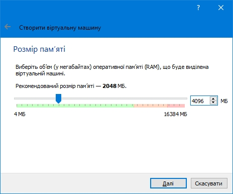 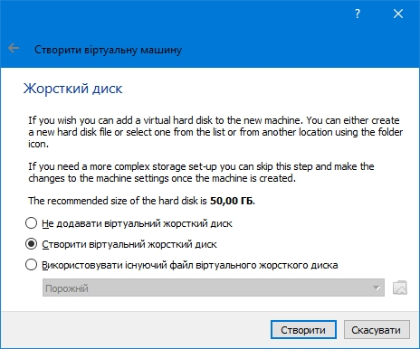 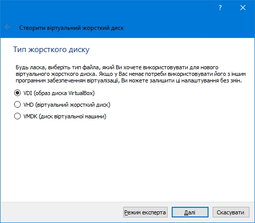 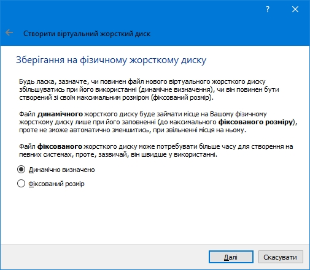For Linux 12 GB, for Windows 25 GB:
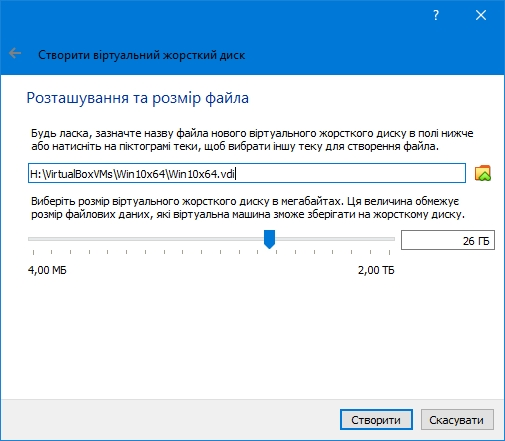2-4 ядра, но не больше половины существующих:
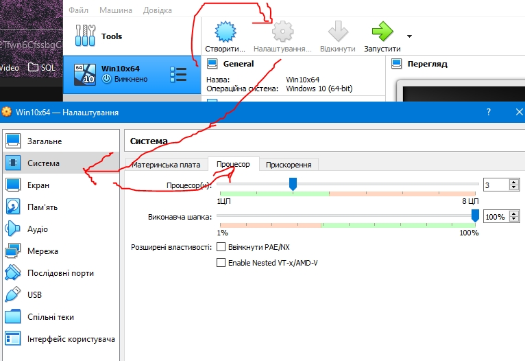Блоггер для линукса выбрал WMSVGA:
VBoxSVGA: Default for Windows. Linux or Windows > 7
VBoxVGA: old OS or Windows < 7
VMSVGA: Default for Linux. Emulates a VMWare device, probably best when your VM was originally set up on VMWare and has their tools installed may not be as fast as VBox cards because it's trying to be compatible with something else.
None: no graphics adapter. i.e. you want to run the machine headless or over SSH and don't need the overhead of it emulating graphics. Could improve performance as it removes a layer or emulation.
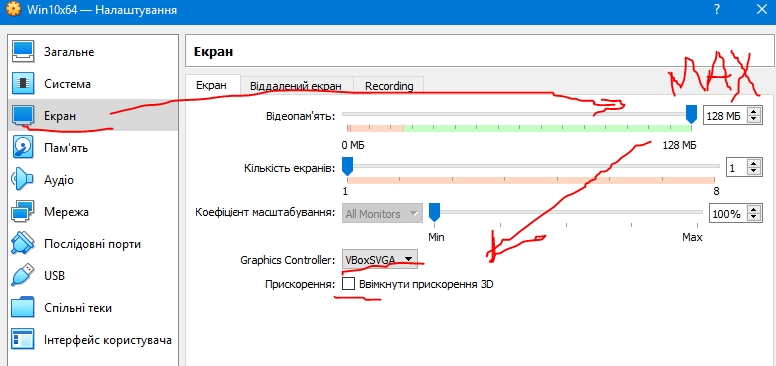
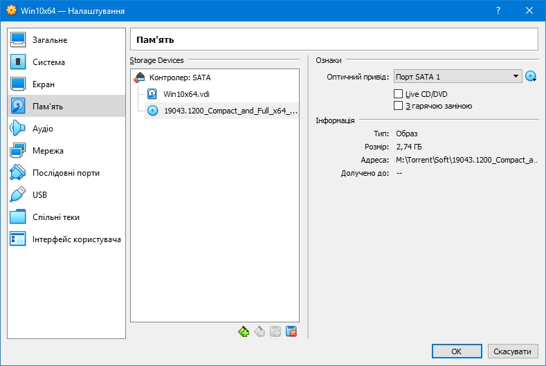
Буфер обмена между двумя системами:
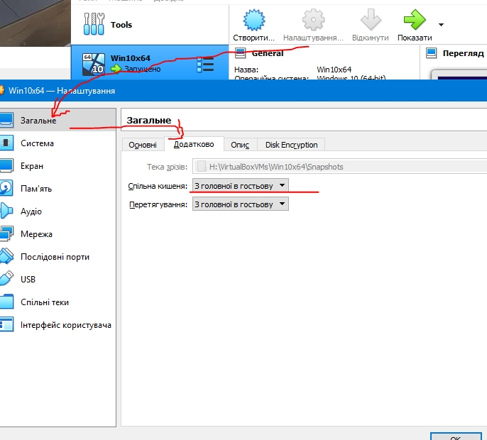 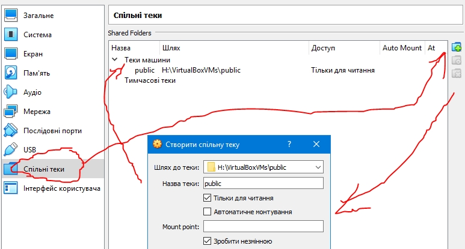To change desktop resolution one of possible actions:
a) In window of VM: View > Virtual Screen 1 > Resize to ... . If option non-acive - try to close and restart guest OS as normally: via the button START
b) In main window: File > Preferences > Display > Hint
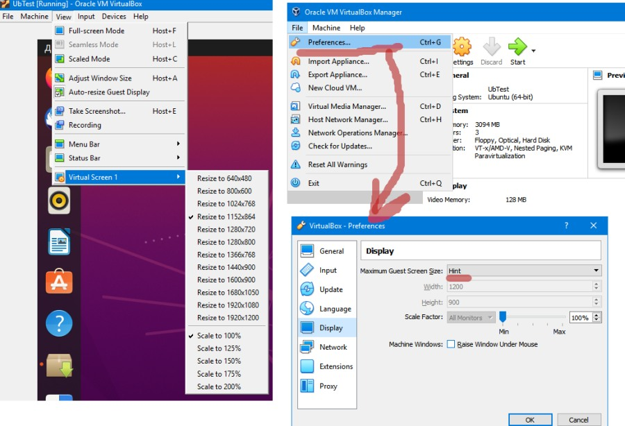Docker